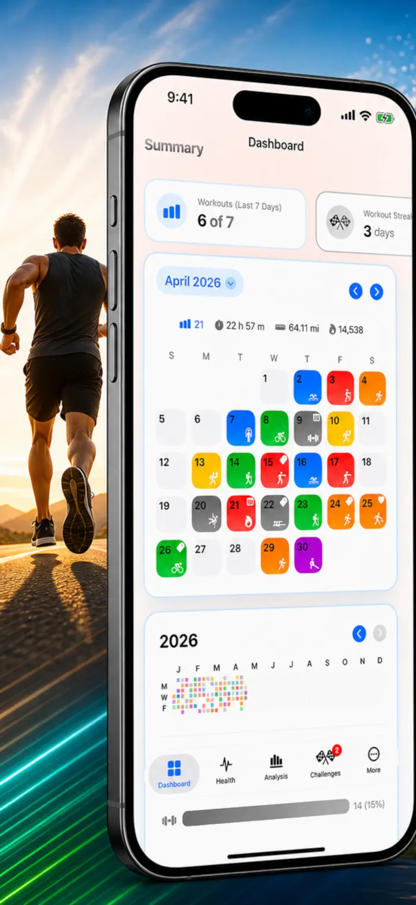
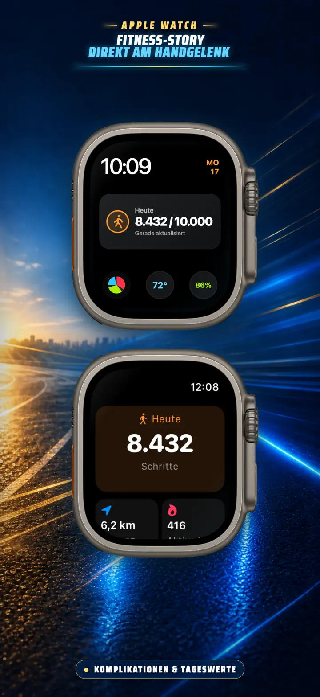
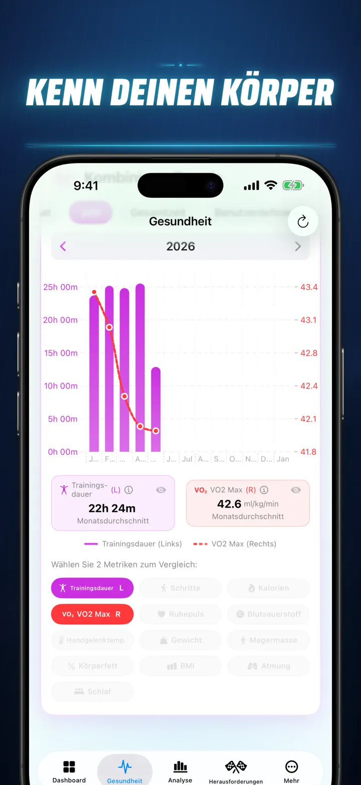
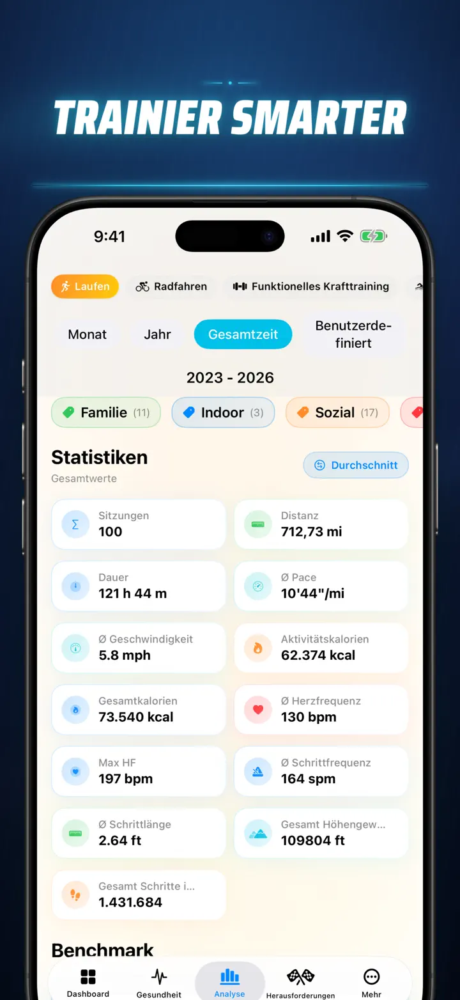
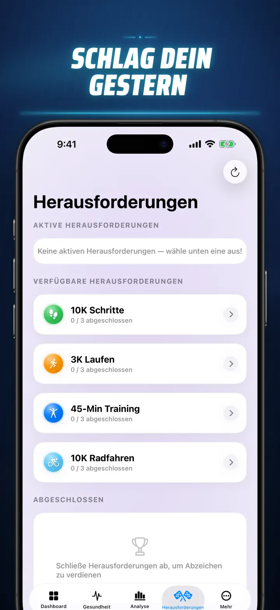
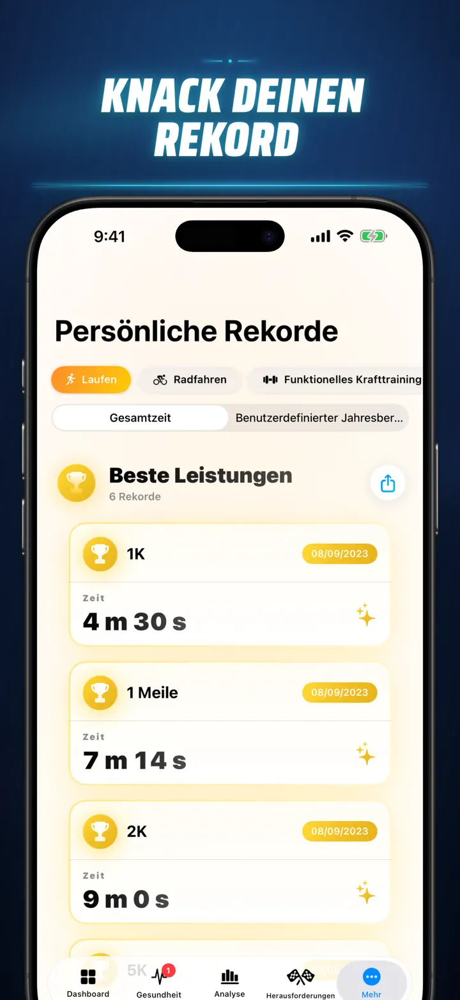
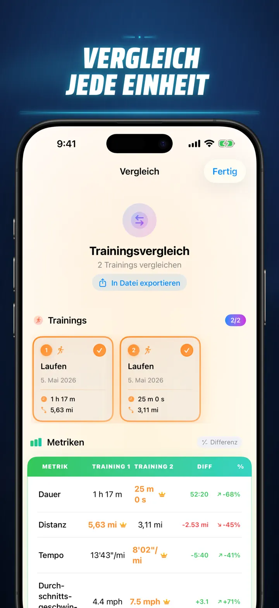
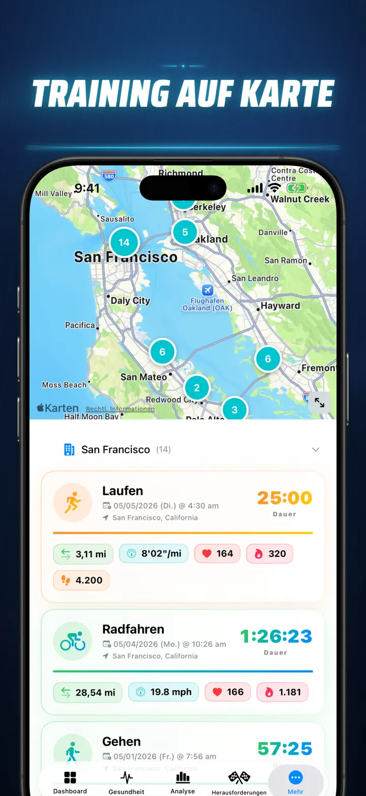
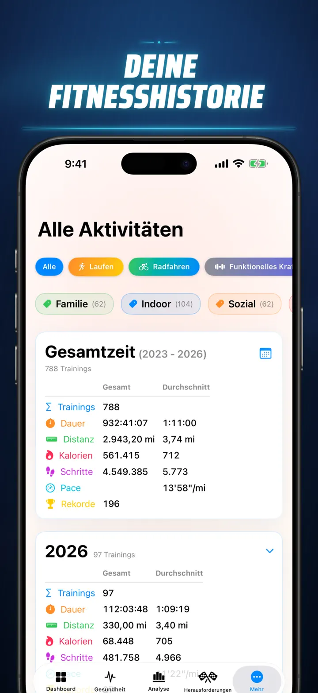

Fitness-Story
Entdecke deine Fitness-Daten
Jetzt auf der Apple Watch: deine Schritte von heute auf jedem Zifferblatt, plus ein „Heute“-Bildschirm mit Strecke, Kalorien und Etagen — direkt aus Apple Health.
Im App Store laden
Über die App
Schluss mit Raten. Fang an zu wissen. Fitness Story verwandelt deine Apple-Health-Daten in die leistungsstärkste und detaillierteste Analyse auf iOS. Keine Konten. Keine Server. Einfach deine gesamte Fitness-Reise, visualisiert.
Ob du Schlafphasen verfolgst, deine Laufkadenz analysierst oder einen Marathon-Rekord anpeilst — dies ist das All-in-One-Dashboard, das deine harte Arbeit verdient.
Funktioniert mit jedem Gerät und jeder App, die mit Apple Health synchronisiert — Apple Watch, Garmin, Polar, Suunto, Zwift und mehr.
ANALYSE AUF PROFI-NIVEAU
- Trend- und Benchmark-Diagramme: Nutze Box-Whisker-Plots, um Median, Quartile und Ausreißer für jede Sportart zu sehen.
- Granulare Aufschlüsselungen: Filtere deine Historie nach Tageszeit, Distanzbereichen, Dauer, Tempo-Intervallen, Höhengewinn, Kadenz und Schrittlänge.
- Alles Ranken: Mit einem Tippen ordnest du die heutigen Metriken (Distanz, Tempo, HF usw.) in deiner gesamten Historie ein. Erfahre sofort, ob du eine „Top 15%"-Leistung erzielt hast.
- Beitragsdiagramm: Eine GitHub-artige Heatmap deiner gesamten Trainingshistorie. Dreh es um, um detaillierte Tagesstatistiken zu sehen.
TRAININGSDETAILS NEU GEDACHT
- Intelligente Karten: Färbe deine Outdoor-Routen nach Geschwindigkeit, Höhe oder Herzfrequenz-Zonen ein. (Inklusive China-Kartenkorrektur).
- Tiefgehende Split-Analyse: Sieh KM- oder Meilen-Splits mit Tempo, Höhe, HF und Kadenz für jede einzelne Runde.
- Herzfrequenz-Zonen: Visualisiere die Zeit in angepassten Zonen 1–5 basierend auf Alter und Ruheherzfrequenz.
- Reichhaltiger Kontext: Füge Fotos, formatierte Notizen, Anstrengungsbewertungen (1–10) und benutzerdefinierte Tags zu jedem Training hinzu.
KOMPLETTES GESUNDHEITS-KOMMANDOZENTRUM
- Alles, was deine Apple Watch misst, visualisiert an einem Ort mit täglichen, wöchentlichen und jährlichen Trends:
- Herz-Kreislauf-Gesundheit: Ruheherzfrequenz, VO2 Max (altersbereinigt), Blutsauerstoff und Atemfrequenz.
- Körperkomposition: Gewicht, Körperfettanteil, fettfreie Masse und BMI mit Trendindikatoren.
- Aktivität und Erholung: Schritte (mit stündlicher Aufschlüsselung), Aktive vs. Grundumsatz-Kalorien und Handgelenkstemperatur-Abweichungen.
- Erweitertes Schlaf-Tracking: Tief-, Kern-, REM- und Wachphasen Nacht für Nacht visualisiert.
- Korrelations-Overlays: Überlagere mehrere Gesundheitsmetriken, um zu sehen, wie dein Schlaf deine Herzfrequenz beeinflusst oder wie dein Gewicht deinen VO2 Max verändert.
VERGLEICHEN UND WETTEIFERN
- Trainingsvergleich: Wähle bis zu 10 Trainings für einen direkten Vergleich. Sieh Abweichungen in Prozent (z.B. „+1,5% Schneller") für jede Metrik, pro Split!
- Vergleichs-Export: Möchtest du mit anderen Tools analysieren? Exportiere deinen Trainingsvergleich!
- Persönliche Rekorde: Automatische Erfassung für 1K, 5K, 10K, Halbmarathon, Marathon und benutzerdefinierte Distanzen. Verdiene Gold-, Silber- und Bronze-Trophäen.
- Story-Zeitstrahl: Ein chronologischer Feed jedes Meilensteins, Rekords und Trainings, das du je absolviert hast.
DEINE DATEN, ÜBERALL
- Globale Karte: Sieh jeden Ort, an dem du je trainiert hast, auf einer interaktiven Weltkarte mit Clustering.
- Leistungsstarker Export: Exportiere deine gesamte Historie (oder benutzerdefinierte Zeiträume) als CSV oder JSON. Enthält vollständige Split-Daten, Körpermetriken und Metadaten.
- iCloud-Synchronisierung: Deine Favoriten, Tags, Notizen und Bewertungen synchronisieren sich sofort auf allen Geräten.
- Datenschutz zuerst: Keine versteckten Server. Deine Daten bleiben auf deinem Gerät und in deiner privaten iCloud.
- Dein Schweiß erzählt eine Geschichte. Es ist Zeit, sie zu lesen. Lade Fitness Story noch heute herunter.
Lade Fitness Story herunter und entdecke das volle Potenzial deiner Daten!
Privacy Policy: https://masawata.net/privacy-policy.html Terms Of Service: https://www.apple.com/legal/internet-services/itunes/dev/stdeula/
Screenshots








Fitness-Story
Jetzt auf der Apple Watch: deine Schritte von heute auf jedem Zifferblatt, plus ein „Heute“-Bildschirm mit Strecke, Kalorien und Etagen — direkt aus Apple Health.
Im App Store laden